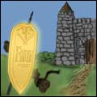

All | Foundation Truth | Treasures of the Kingdom | Dear Princess | Books | Sermons | Articles | Tracts

Robert L. Berry, 1924
Copyright: Public Domain
Main subject: Sanctification
Published: 2003
Last edited: December 10, 2004
“All things” means all things. The Christian who gives up all is certain of God’s continual care and protection. He cannot expect to escape trouble or trial or temptation; but he is kept in these things…. They may be hurt…but they will sail on in peace in God.
from Pilgrims of the Victorious Life